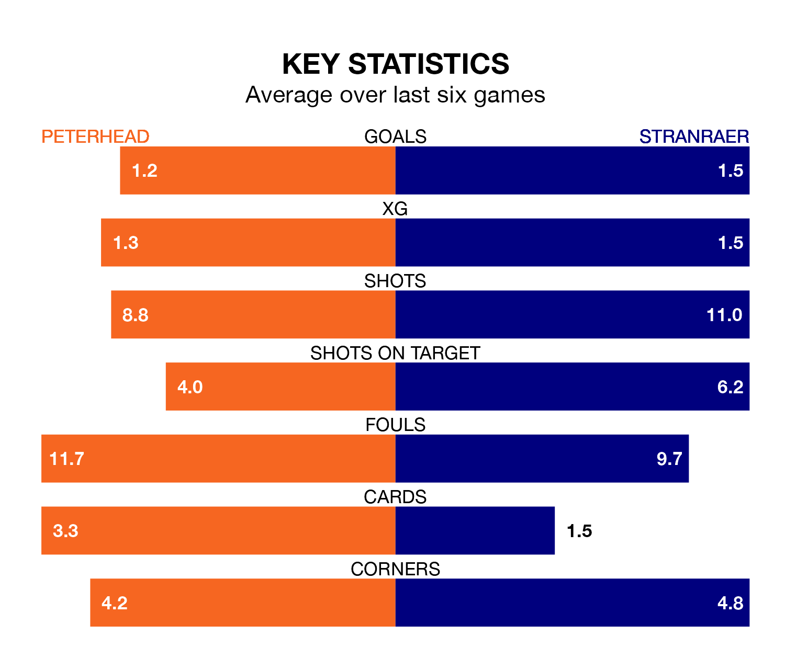

Peterhead host Stranraer in Saturday's match at the Balmoor Stadium looking to bounce back from defeat last time out in League Two.
The Blue Toon, who sit third in the league after 27 games, fell to a 1-0 away defeat to Dumbarton on March 2.
They face a Stranraer side who picked up a win in their last match, a 5-0 victory against Dumbarton, and who sit eighth in the table.
With 42 goals in 27 games so far this season, Peterhead are the league's third-highest scorers with 1.6 goals per game. And they are conceding fewer than average, letting in 30 goals at a rate of 1.1 per game.
Stranraer, meanwhile, are below average scorers, with 1.2 goals per game, compared to a league average of 1.3. They have conceded 1.6 goals per game.
In the last 10 years, Peterhead and Stranraer have played each other on 17 occasions. Peterhead won six of them, Stranraer seven, and they drew four times.
On average, the Blue Toon scored 1.6 goals and Stranraer 1.6 in those matches.
Their last meeting was on January 13, when Stranraer won 2-0 at home.
With Stuart McKenzie between the sticks, the Blue Toon can rely on one of the league's safest pair of hands. He has kept five clean sheets in his 26 appearances this season in League Two.
In the visitors' net, Lewis Budinauckas also has five clean sheets in 20 games. He has conceded a goal every 62 minutes, 30% more often than the 78 minutes between goals for McKenzie.
The home side are in mixed form in League Two, with one win and four draws from their last six games.
With two wins and two draws over that period, Stranraer's form is slightly better – they have taken eight points from 18, compared to Peterhead's seven.
Saturday's match will be refereed by Ryan Lee, who has taken charge of 11 League Two games so far this season, issuing two red cards and booking 38 players. He has awarded two penalties.
The last Peterhead game Lee refereed was a 2-0 away loss to Stenhousemuir on November 14. His last Stranraer match was their 3-0 loss at home against Stenhousemuir on November 18.
Updated: 09:34 (UTC), 08/03/24